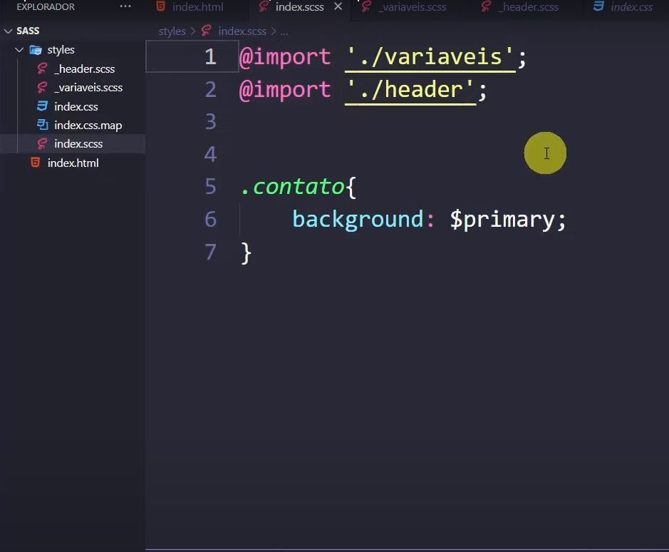
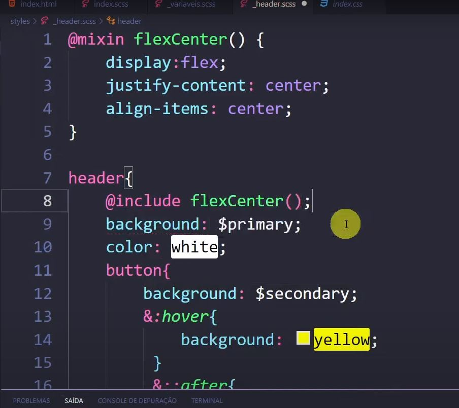
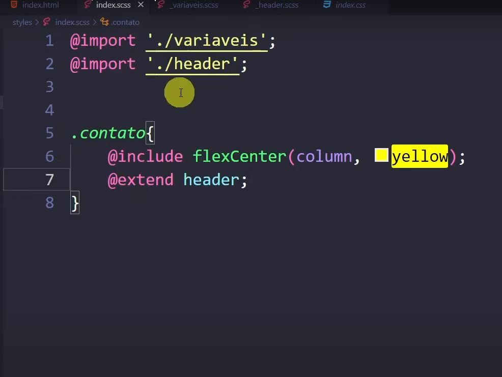

O Sass é uma linguagem de programação, que é usada para criar um arquivo css que pode ser lido pelo nosso navegador.
O SuperCss não é compreendido pelos outros navegadores, nesse caso precisamos compilar o arquivo Sass, para transformarmos ele em CSS.
Normalmente para facilitar o trabalho utilizamos um extensão chamada "Live Sass Compiler" que faz a compilação automaticamente, criando assim um arquivo css feito do nosso arquivo sass.
Conceitos Importantes de SASS.
Conceito de variáveis
Utilizamos esse conceito para deixar o nosso programa mais facil de ser interpretado, pois podemos criar uma variavel para a cor azul, e assim colocarmos em varios backgrounds de nossa aplicação e se for necessário trocar não precisamos procurar uma a uma ou utilizar um comando que pode alterar algo a mais, alteramos somente a nossa variavel que ira alterar automáticamente todas as tags que estão com essa variavel.
Como por exemplo:

Nesse exemplo acima podemo ver que ele criou uma variavel com a cor verde limão e colocou essa variável e várias tag's que eram necessária, se for necessário trocar a cor de todas essas tag's ele somente altera a cor na variável.
Conceito de Agrupamento
Utilizamos esse conceito para agruparmos os elementos em um só local, assim ficando mais facil para darmos manutenção em nosso sistema.
Como por exemplo:

Nesse caso do exemplo nós colocamos todos as tag's dentro da tag do elemento header para asssim ficar mais fácil na visualização.
Conceito Import
Utilizamos esse conceito para importarmos um código em arquivos separados e assim importar para o nosso aqrquivo principal para asism deixarmos mais facil a localização de cada coisa, e facilitando na manutenção.
Como utilizamos ele?
Primeiramente criamos um novo arquivo colocando o "_" antes de especificar o nome dele e depois usamos o @import "linkdoarquivo" em nossa página index.scss, como podemos ver no exemplo abaixo:

Nesse exemplo criamos o import do header e das variaveis, sendo assim criamos dois arquivos scss com os seus respectivos nomes e criamos um link de import como mostramos anteriormente.
Recurso Mixin/include
Utilizamos esse recurso para criarmos como se fosse uma função pronta para as nossas tag's como por exemplo:

Esse exemplo acima utilizamos esses recurso para adicionar alguns parametros pré definidos e assim logo depois de definir os nossos parametros, adicionamos ele ao elemento que queremos.
Recurso Extend
Utilizamos esse recurso para "copiar" as propriedades de algum elemento e fazer igual em outro elmento como por exemplo:

Como por exemplo aqui nós queriamos que o nosso div contato seja identico ao nosso header, se fosse no css convencional precisáriamos copiar de um e colar no outro, já no Sass nós fazemos da maneira acima.